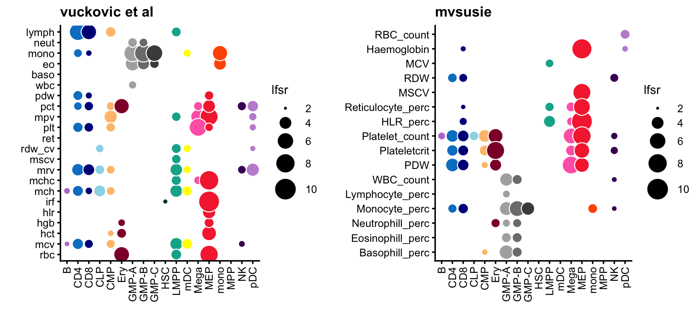

gchromVAR analysis of SuSiE and mvSuSiE fine-mapping results for UK Biobank blood cell traits
Peter Carbonetto
October 25, 2023
Here we summarize the results of a gchromVAR analysis using the susie and mvsusie fine-mapping results for the blood cell traits. We compare against the gchromVAR analysis that was done in the Vuckovic et al paper.
Load the packages used in the analysis.
library(ashr)
library(BuenColors)
library(ggplot2)
library(ggrepel)
library(cowplot)For reproducibility, set the seed.
set.seed(1)These are the cell types in the hematopoesis hierarchy:
celltypes <- c("B","CD4","CD8","CLP","CMP","Ery","GMP-A","GMP-B","GMP-C",
"HSC","LMPP","mDC","Mega","MEP","mono","MPP","NK","pDC")
celltype_colors <- c(jdb_color_map(celltypes[1:11]),
c("yellow","hotpink"),
jdb_color_map(celltypes[14:18]))
names(celltype_colors) <- celltypesLoad the SuSiE and mvSuSiE gchomeVAR results:
susie_traits <- rev(
c("Lymphocyte_perc","Neutrophill_perc","Monocyte_perc","Eosinophill_perc",
"Basophill_perc","WBC_count","PDW","Platelet_count","Plateletcrit",
"Reticulocyte_perc","RDW","MSCV","HLR_perc","Haemoglobin","MCV",
"RBC_count"))
susie <- read.csv("../output/blood_cell_traits/gchromvar_susie.csv",
stringsAsFactors = FALSE)
mvsusie <- read.csv("../output/blood_cell_traits/gchromvar_mvsusie.csv",
stringsAsFactors = FALSE)
susie <- transform(susie,
celltype = factor(celltype,celltypes),
trait = factor(trait,susie_traits))
mvsusie <- transform(mvsusie,
celltype = factor(celltype,celltypes),
trait = factor(trait,susie_traits))For a point of comparison, we will use the gchromVAR results from the Vuckovic et al paper (they were downloaded from here):
vuckovic_traits <- c("rbc","mcv","hct","hgb","hlr","irf","mch","mchc","mrv",
"mscv","rdw_cv","ret","plt","mpv","pct","pdw","wbc",
"baso","eo","mono","neut","lymph")
vuckovic <- read.table("../data/vuckovic_gchromVAR_zscores_ukbb_v2.txt",
sep = "\t",header = TRUE,stringsAsFactors = FALSE)
vuckovic <- transform(vuckovic,
Celltype = factor(Celltype,celltypes),
Trait = factor(Trait,vuckovic_traits))Shrink the z-scores using adaptive shrinkage:
ash1 <- ash(susie$zscore,1)
ash2 <- ash(mvsusie$zscore,1)
ash3 <- ash(vuckovic$zscore,1)
susie <- transform(susie,
zscore = with(ash1$result,PosteriorMean/PosteriorSD),
lfsr = -log10(ash1$result$lfsr))
mvsusie <- transform(mvsusie,
zscore = with(ash2$result,PosteriorMean/PosteriorSD),
lfsr = -log10(ash2$result$lfsr))
vuckovic <- transform(vuckovic,
zscore = with(ash3$result,PosteriorMean/PosteriorSD),
lfsr = -log10(ash3$result$lfsr))This plot roughly reproduces Fig. 3A from the Vuckovic et al paper:
pdat <- transform(vuckovic,lfsr = pmin(lfsr,10))
p1<-ggplot(vuckovic,aes(x = Celltype,y = Trait,fill = Celltype,size = lfsr)) +
geom_point(shape = 21,color = "white") +
scale_size(range = c(1,7),limits = c(2,10)) +
scale_fill_manual(values = celltype_colors,guide = "none") +
guides(size = guide_legend(override.aes = list(shape = 21,fill = "black"))) +
theme_cowplot(font_size = 9) +
labs(x = "",y = "") +
theme(axis.text.x = element_text(angle = 90,hjust = 1,vjust = 0.5))
p1
Let’s now compare these results to the results generated by the mvsusie fine-mapping of blood cell traits:
pdat <- transform(mvsusie,lfsr = pmin(lfsr,10))
p2 <- ggplot(mvsusie,aes(x = celltype,y = trait,fill = celltype,size = lfsr)) +
geom_point(shape = 21,color = "white") +
scale_size(range = c(1,7),limits = c(2,10)) +
scale_fill_manual(values = celltype_colors,guide = "none") +
guides(size = guide_legend(override.aes = list(shape = 21,fill = "black"))) +
theme_cowplot(font_size = 9) +
labs(x = "",y = "") +
theme(axis.text.x = element_text(angle = 90,hjust = 1,vjust = 0.5))
plot_grid(p1 + ggtitle("vuckovic et al"),
p2 + ggtitle("mvsusie"),
rel_widths = c(87,100))
Compare the susie-based and mvsusie-based gchromVAR z-scores:
pdat <- data.frame(trait = susie$trait,
celltype = susie$celltype,
susie = susie$zscore,
mvsusie = mvsusie$zscore)
z <- c(susie$zscore,mvsusie$zscore)
ggplot(pdat,aes(x = susie,y = mvsusie,color = celltype,label = trait)) +
geom_point(shape = 20,size = 1.75) +
geom_abline(intercept = 0,slope = 1,color = "black",linetype = "dotted") +
geom_text_repel(size = 2,segment.color = "darkgray",segment.size = 0.25,
min.segment.length = 0) +
scale_color_manual(values = celltype_colors) +
xlim(min(z),max(z)) +
ylim(min(z),max(z)) +
theme_cowplot(font_size = 10)The same comparison, broken down by cell type:
p <- vector("list",length(celltypes))
names(p) <- celltypes
for (i in celltypes) {
dat1 <- subset(susie,celltype == i)
dat2 <- subset(mvsusie,celltype == i)
z <- c(dat1$z,dat2$z)
pdat <- data.frame(trait = as.character(dat1$trait),
susie = dat1$zscore,
mvsusie = dat2$zscore,
stringsAsFactors = FALSE)
p[[i]] <- ggplot(pdat,aes(x = susie,y = mvsusie,label = trait)) +
geom_point(shape = 20,color = celltype_colors[i]) +
geom_abline(intercept = 0,slope = 1,color = "black",linetype = "dotted") +
xlim(min(z),max(z)) +
ylim(min(z),max(z)) +
ggtitle(i) +
theme_cowplot(font_size = 9) +
theme(plot.title = element_text(size = 10,face = "plain"))
}
do.call(plot_grid,p)Validation of the mvsusie-based gchromVAR analysis by comparing the z-scores for the 6 traits that were common to the mvsusie-based analysis and the Vuckovic et al analysis:
create_scatterplot <- function (z1, z2, title) {
pdat <- data.frame(z1 = z1,z2 = z2)
z <- c(z1,z2)
return(ggplot(pdat,aes(x = z1,y = z2)) +
geom_point(shape = 20) +
geom_abline(intercept = 0,slope = 1,color = "magenta",
linetype = "dotted") +
xlim(min(z),max(z)) +
ylim(min(z),max(z)) +
labs(x = "vuckovic et al",y = "mvsusie",title = title) +
theme_cowplot(font_size = 9) +
theme(plot.title = element_text(size = 9,face = "plain")))
}
p1 <- create_scatterplot(subset(vuckovic,Trait == "wbc")$zscore,
subset(mvsusie,trait == "WBC_count")$zscore,
"WBC count")
p2 <- create_scatterplot(subset(vuckovic,Trait == "plt")$zscore,
subset(mvsusie,trait == "Platelet_count")$zscore,
"platelet count")
p3 <- create_scatterplot(subset(vuckovic,Trait == "rbc")$zscore,
subset(mvsusie,trait == "RBC_count")$zscore,
"RBC count")
p4 <- create_scatterplot(subset(vuckovic,Trait == "hgb")$zscore,
subset(mvsusie,trait == "Haemoglobin")$zscore,
"Haemoglobin")
p5 <- create_scatterplot(subset(vuckovic,Trait == "mcv")$zscore,
subset(mvsusie,trait == "MCV")$zscore,
"MCV")
p6 <- create_scatterplot(subset(vuckovic,Trait == "pct")$zscore,
subset(mvsusie,trait == "Plateletcrit")$zscore,
"Platelet crit.")
plot_grid(p1,p2,p3,p4,p5,p6,nrow = 2,ncol = 3)This last code chunk is a record of the exact versions of the R packages used to generate the results (in case we want to reproduce this analysis):
sessionInfo()
# R version 3.6.2 (2019-12-12)
# Platform: x86_64-apple-darwin15.6.0 (64-bit)
# Running under: macOS Catalina 10.15.7
#
# Matrix products: default
# BLAS: /Library/Frameworks/R.framework/Versions/3.6/Resources/lib/libRblas.0.dylib
# LAPACK: /Library/Frameworks/R.framework/Versions/3.6/Resources/lib/libRlapack.dylib
#
# locale:
# [1] en_US.UTF-8/en_US.UTF-8/en_US.UTF-8/C/en_US.UTF-8/en_US.UTF-8
#
# attached base packages:
# [1] stats graphics grDevices utils datasets methods base
#
# other attached packages:
# [1] ashr_2.2-57 cowplot_1.1.1 ggrepel_0.9.1 BuenColors_0.5.6
# [5] ggplot2_3.3.6 MASS_7.3-51.4
#
# loaded via a namespace (and not attached):
# [1] tidyselect_1.1.1 xfun_0.36 bslib_0.3.1 purrr_0.3.4
# [5] lattice_0.20-38 colorspace_1.4-1 vctrs_0.3.8 generics_0.0.2
# [9] htmltools_0.5.4 yaml_2.2.0 utf8_1.1.4 rlang_1.0.6
# [13] mixsqp_0.3-48 jquerylib_0.1.4 pillar_1.6.2 glue_1.4.2
# [17] withr_2.5.0 DBI_1.1.0 lifecycle_1.0.3 stringr_1.4.0
# [21] munsell_0.5.0 gtable_0.3.0 evaluate_0.14 labeling_0.3
# [25] knitr_1.37 fastmap_1.1.0 invgamma_1.1 irlba_2.3.3
# [29] fansi_0.4.0 highr_0.8 Rcpp_1.0.8 scales_1.1.0
# [33] jsonlite_1.7.2 truncnorm_1.0-8 farver_2.0.1 digest_0.6.23
# [37] stringi_1.4.3 dplyr_1.0.7 grid_3.6.2 cli_3.5.0
# [41] tools_3.6.2 magrittr_2.0.1 sass_0.4.0 tibble_3.1.3
# [45] crayon_1.4.1 pkgconfig_2.0.3 ellipsis_0.3.2 Matrix_1.3-4
# [49] SQUAREM_2017.10-1 assertthat_0.2.1 rmarkdown_2.21 R6_2.4.1
# [53] compiler_3.6.2